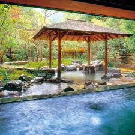

A private onsen bath isn’t just a luxury — it’s a lifestyle choice that brings relaxation, wellness, and a touch of Japanese tradition into your home. For Tokyo residents, where stress and busy schedules are part of daily life, having your own onsen offers a perfect escape without leaving home. Here are the top five benefits of installing a private onsen in your home.
Nothing compares to immersing yourself in warm, soothing water after a long day. Private onsen baths are designed to help you unwind, reduce stress, and calm the mind. The gentle warmth and quiet ambiance mimic the therapeutic effects of natural hot springs, creating a personal sanctuary right in your home. Tip: Pair your onsen with ambient lighting, subtle scents, or natural wooden finishes to enhance the relaxing experience.
Japanese onsen baths traditionally contain minerals that promote blood circulation, relieve muscle tension, and improve skin health. Even in a home setting, using mineral-enriched or filtered water can provide similar benefits. Regular bathing in your onsen can contribute to overall well-being, better sleep, and reduced physical stress.
“A private onsen at home transforms everyday life into a sanctuary of relaxation, wellness, and luxury.”
No need to travel to public baths or hotels — your private onsen is available anytime you desire. This is especially convenient in a busy city like Tokyo. You control the schedule, water temperature, and atmosphere, enjoying your personal spa experience whenever you want, without interruptions.
- Measure your space accurately.
- Consider privacy, natural light, and room ventilation.
- Plan for water supply, drainage, and maintenance access.
 A home onsen can be fully customized to match your space, style, and preferences. Choose from traditional wooden tubs, modern stone designs, or a combination of materials. You can adjust size, depth, and layout, creating a bath that fits perfectly with your home interior and reflects your personal taste. Design Tip: Incorporate natural materials, indoor plants, or soft lighting for a spa-like ambiance.
A professionally installed onsen is a luxury feature that can significantly increase property value. Whether you plan to sell your home in the future or simply want to enhance its appeal, a home onsen demonstrates premium living, making it an attractive feature for buyers and guests alike.
Installing a private onsen in your Tokyo home is more than just a bath — it’s an investment in comfort, wellness, and luxury. From relaxation and health benefits to convenience and added property value, a home onsen transforms everyday life into a serene and rejuvenating experience. With professional installation from ZenStream Onsen, you can enjoy the authentic Japanese bathing tradition safely, efficiently, and beautifully.